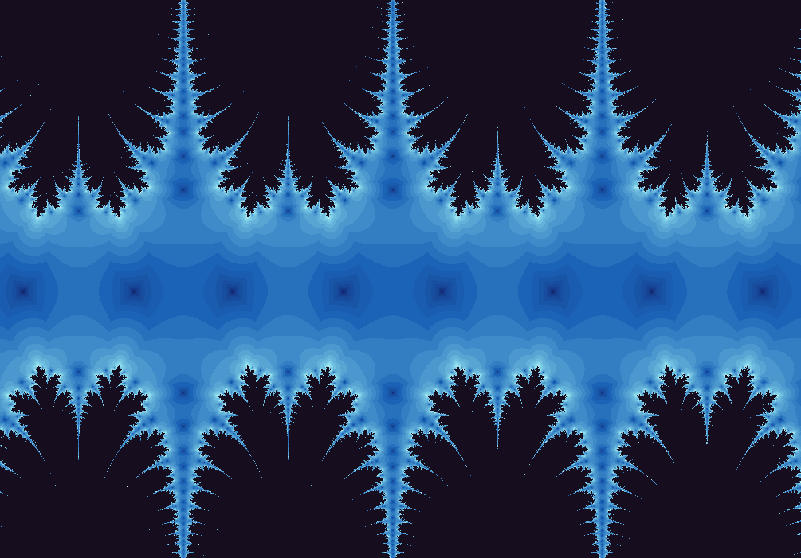

Fractal gallery
Fixed Point Cosine
A familiar wave function turned into a basin map.
Repeated cosine can pull many starting points toward stable behavior. In the complex plane, the borders around those destinations become the interesting part of the exhibit.

What to try first
Use orbit display in a broad region and watch the sequence settle.
Move toward a boundary where the color changes quickly. Convergence often slows near these borders.
Compare this page with Fixed Point Sine. The functions are simple siblings, but their complex basins have different personalities.
Mathematical notes
What convergence means here
wxChaos iterates \(z_{n+1}=\cos(z_n)\). A fixed point satisfies \(z=\cos(z)\). The renderer stops treating the orbit as active once successive values are closer than the configured minimum step, so color becomes a map of how quickly the iteration settles.